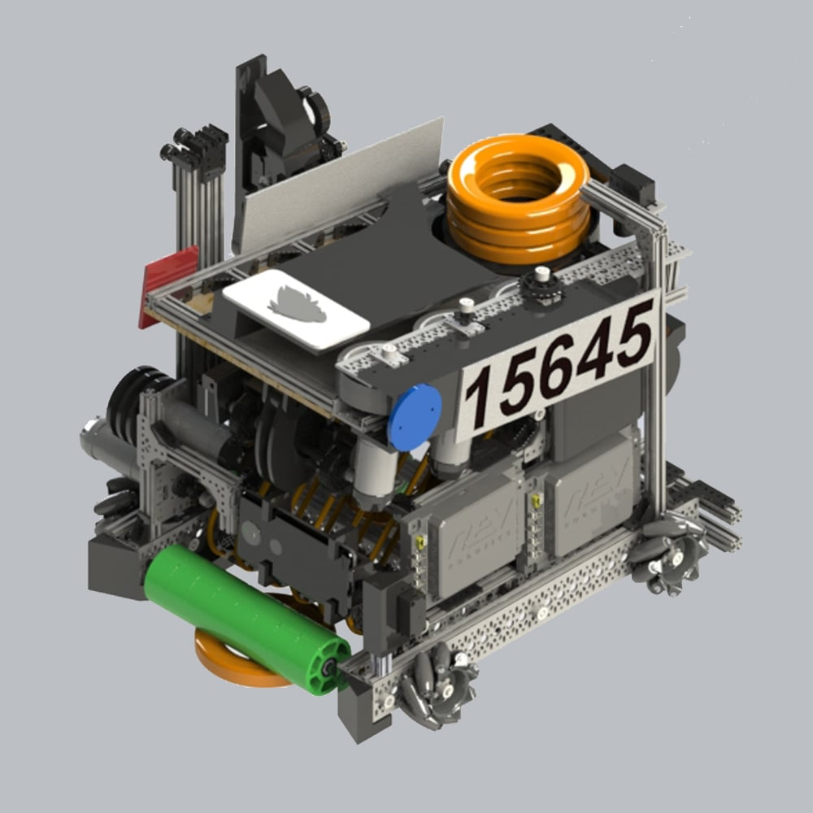

What is it about?

I designed this robot in September 2020 with the expectation that the pandemic situation would be resolved by the end of the year, allowing us to compete in January. The idea was to create a design that addressed the challenges of that year, despite the uncertain times. However, things did not improve as expected, and this robot remained as a concept. Nonetheless, it provided me with a valuable experience in mechanical design.
The characteristics that would have made this robot unique are:
- Chassis with mecanum wheels for omnidirectional movement of the robot in all directions.
- Internal intake with a flexible wheel roller to pick up discs from the floor.
- Conveyor belt to move the discs from the intake to a container where three of them would be stacked.
- Container with a linear elevator to raise the discs from their lowest point to the height of the shooter.
- Servomotor that would act as a kicker to push the discs from their position in the elevator to the shooter.
- Shooter with a series of 3 high-speed wheels and two motors to accelerate the discs enough to shoot from any corner of the field.
- Adjustable angle to orient the shooter's superstructure within the required range of angles.
- Arm with 2 degrees of freedom attached to an elevator to grab a semi-circular base tube and remove it from the field to earn additional points.
- Mobile phone holder that controls the robot and serves as a camera to visualize the surroundings.
For this robot, I created a technical brochure that provides a detailed and visual description of each part of the robot. The design can be found on my GrabCAD.